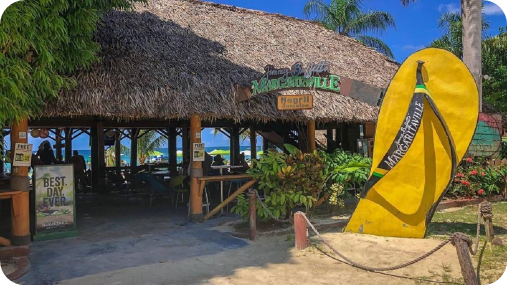

The Essence of Relaxation

Westmoreland Jamaica is on the western tip of the island; very attractive on the coastal lowlands and unspoilt on the higher grounds. Savanna-la-mar is the capital, and Negril its main tourist resort with beautiful aqua marine Jamaican shores and pristine soft white sand beaches is the playground of visitors worldwide. In Westmoreland, one of the most noteworthy tourism spot is in Negril. Negril is the epitome of relaxation. Famous for beautiful sunsets, a 7-mile stretch of bright white sandy beach, and picturesque cliffs overlooking the emerald green sea, this is the place for you to come and soothe your soul. Enjoy the slow pace of life here with the freshest seafood caught daily and the most amazing beachside sunsets you'll ever see.
NEGRIL HOTELS
Charming guesthouses, villas, all-inclusive resorts, adults-only hotels, and interesting accommodations await you here. Many of Negril’s best places to stay line the shores, affording you quick beach access and amazing views from your room. From the backpacker to the indulgent, there are accommodations to suit the needs of every type of traveler. On the cliffside of Negril are many luxury boutique hotels, ideal for a romantic getaway, destination wedding, or honeymoon. This is the quiet side of Negril, away from the busy beaches and hectic nightlife. The cliffs are surrounded by lush gardens and a zenlike ambiance to accompany your spectacular sunset views. Down on the beach, you'll find a wider variety of hotels. Even with the varying options, a great number of Negril resorts are all-inclusive or at the very least, breakfast inclusive, giving you one less thing to think about. Take a leisurely walk along the beach to find an array of restaurants, beach bars, glass-bottom boats offering snorkeling and sunset cruises, and all sorts of talented musicians enticing you to sway to the notes of their chosen instrument.
RESTURANTS
Venture off to dine at any of the many restaurants in Negril. You can spend an evening at a balmy outdoor restaurant serving the finest Italian delicacies or share an intimate meal in the candlelit caves by the sea. Stop at a tiny neighborhood dig dishing up spicy local favorites or enjoy your meal right on the beach. Get ready to party the night away as the tables make way for the dancefloor and the DJ takes over at some spots. The young and young at heart all love Negril for its enrapturing vibe.
Westmoreland Attractions
- Jamaica Whitewater Expedition - Cabarita
- Ray's Water Sport Negril
- Alexander Herbie Watersports
- Stanley Deep Sea Fishing
- Negril Caves
- Negril Point Lighthouse
- Premium Parasailong
- Blue Water Watersports
- Marine Life ventures Co Ltd
WHAT TO DO IN WESTMORELAND

If you are looking for a change from the beach and feeling a little adventurous, seek out Blue Hole Negril…a
little off the beaten track but a great surprise. The Blue Hole Mineral Spring opens 9am daily and opens until the
sun goes down. THe bar is open until you say when. Admission US$7.00 per person for the day.
You can also visit Rhodes Hall Plantation and take a horseback ride through the property and sample some delicious Jamaican fruits.
Guides will talk you through the tour and the history of this fruitful plantation will be revealed.
For the nature lovers among you, Abeokuta Park is a must visit. As with most of the significant properties in Jamaica,
this park was originally a plantation yard. The remains of the Great House still stand as does the oldest and largest
swimming pool in Jamaica dating back some three hundred years.
Beaches in Westmoreland
- Bluefields Beach Park
- Cosmos Beach
- Long Bay
- White House Beach
Kool Runnings Water Park
Kool Runnings Adventure Park prides itself on meeting and exceeding international standards. The facility holds membership
in the World Water Park Association and their lifeguards are internationally certified. As the largest waterpark in
Jamaica, Kool Runnings has a variety of activities for guests including waterslides and tubing. But the adventures are
not just in the water - there is go-kart racing and paintball. There's an adventure waiting - head to Kool Runnings
Waterpark in Negril!
KAYAKING ADVENTURE - The adventure zone features fibre glass 2 person kayaks that can be operated by one or two persons.
Patrons can go kayaking the length of the canal on the great morass, taking time to see the fish, birds and wildlife in
the wetlands. This adventure requires the ability to swim and previous experience in kayaking. Approved life jackets
must be worn by all on this ride.
PAINTBALL ADVENTURE - Paintball gaming consists of opposing persons or teams, using a shooting instrument known as a
'Marker' to tag each other with a projectile consisting of a small ball of paint. The paintball breaks on contact with
the target & it leaves a coloured mark on the clothes or skin of the opponent. Once an opponent is hit, he/she is out of
the game. There are many different games that are played, under the watchful eye of our 'marshalls' who regulate the game
& see to the safety of the operation.
4 SPIN HUMAN GYROSCOPE - Test your astronaut skill this summer on our new, first of its kind, human gyroscope, which takes
4 people on the heart pumping gyrations experienced by astronauts in space. These gyroscopes are used by nasa in the training
and preparations of candidates for outer space.
JAMBOO RAFTING - Jamaica has been famous for it's two-person bamboo rafting on the Rio Grande & Martha Brae rivers,
but now, Kool Running's offers a new concept of “Family Bamboo Rafting” that can take up to six adults on a casual fling
on a lazy canal through Negril's famous Great Morass. Two & four person rafting is also available on this unforgettable
encounter. Each boat is powered by one or two guides using traditional bamboo poles.
Browse other parishes >
Montego Bay
Kingston
St. Ann
Copyright ©2022 All rights reserved | Made by Tahirah Earle